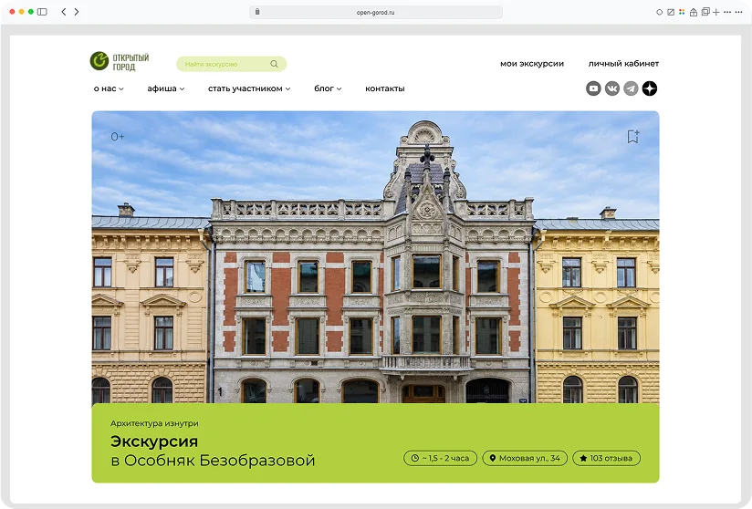
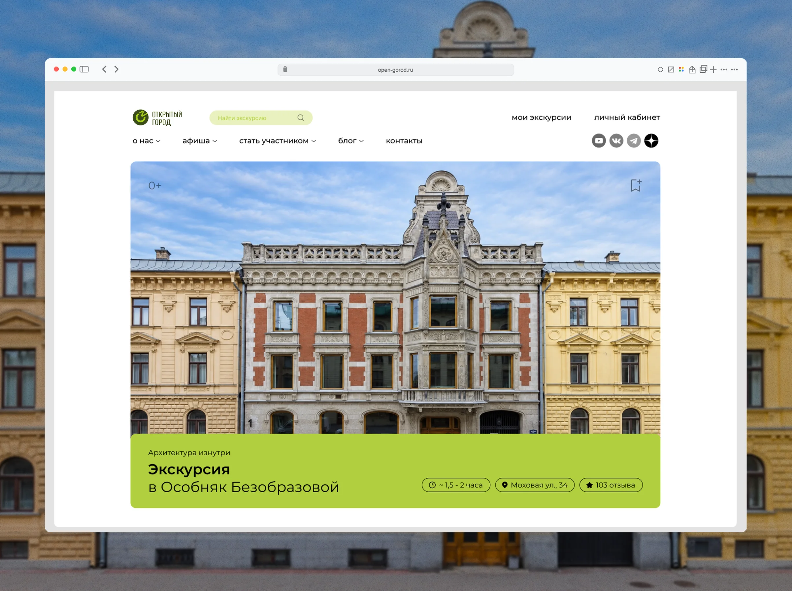
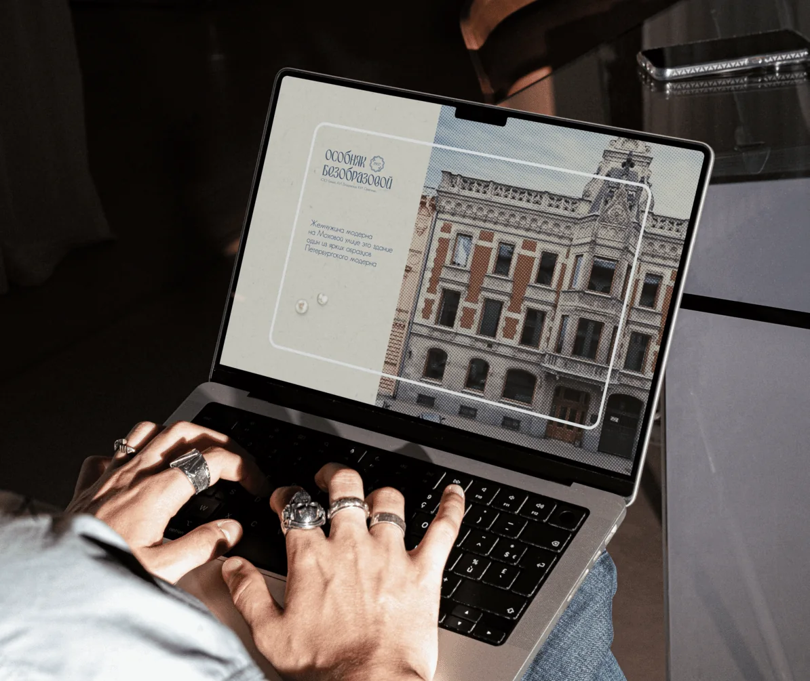
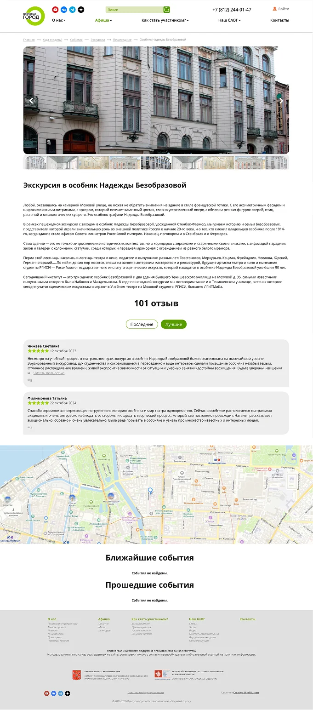
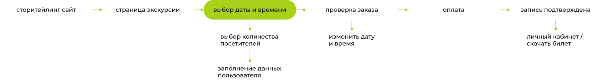
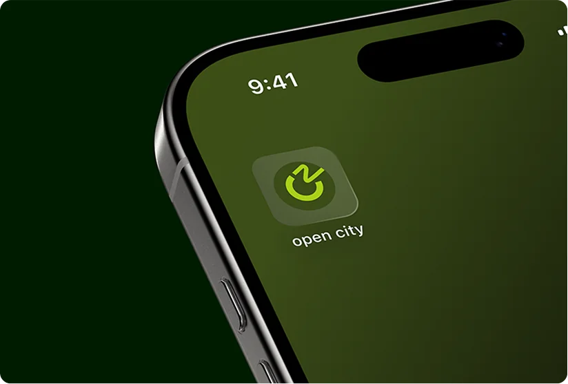
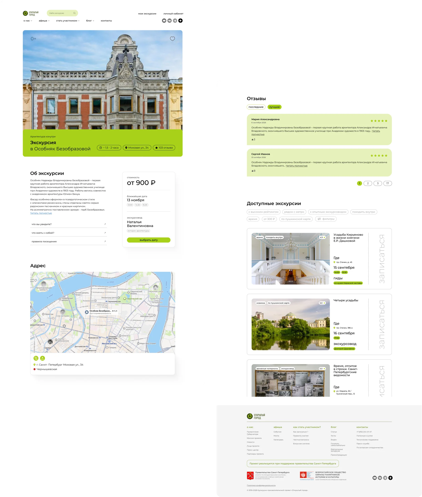
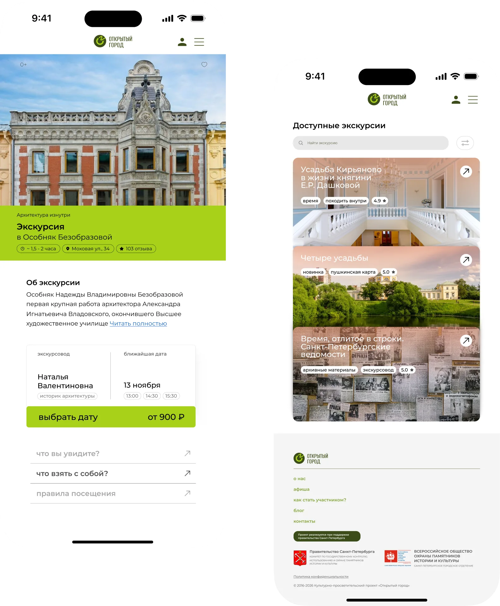
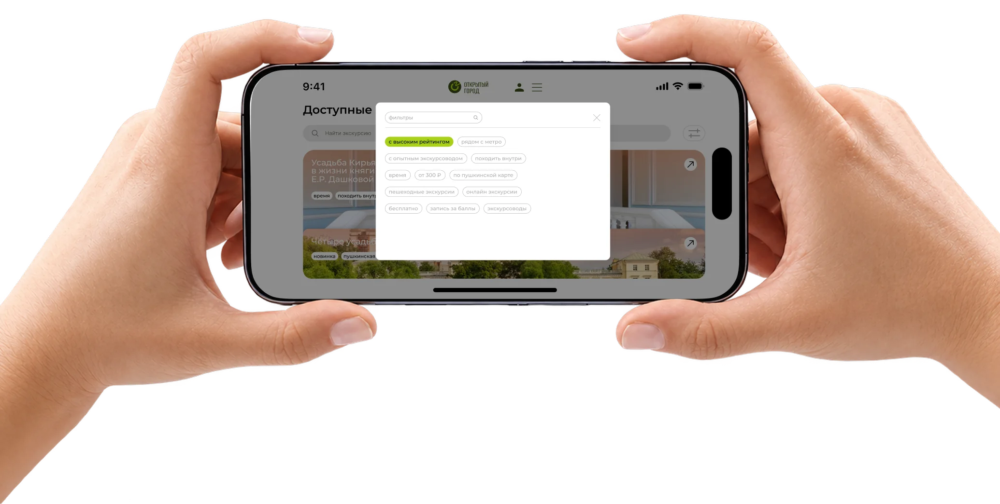
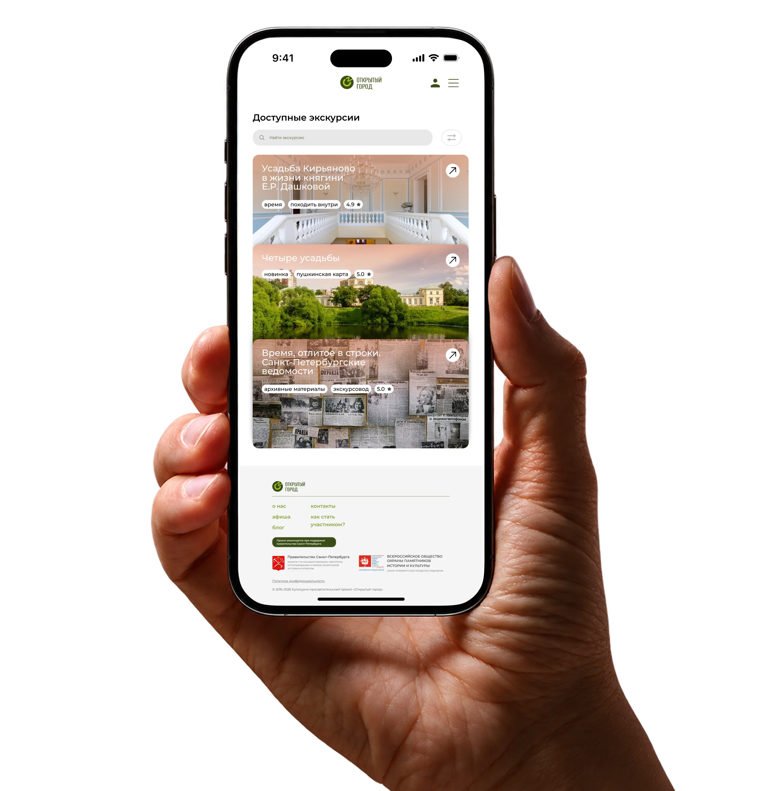

Вынесла ключевую информацию на первый экран:
название экскурсии, фотографию особняка, длительность, адрес, рейтинг и стоимость



Перейти к проекту

Я перестроила страницу экскурсии вокруг сценария покупки, сохранив узнаваемый стиль сервиса «Открытый город»
название экскурсии, фотографию особняка, длительность, адрес, рейтинг и стоимость

С помощью этой версии логотипа есть возможность использовать знак отдельно, например в иконке приложения

Пользователь проходит понятный путь: знакомится с экскурсией, выбирает дату и время, указывает количество человек, вводит контактные данные и получает подтверждение записи
Я собрала страницу так, чтобы основные действия были видны сразу: пользователь видит экскурсию, быстро считывает условия и может перейти к выбору даты без лишних шагов.

В мобильной версии я сохранила тот же сценарий, но адаптировала его под последовательный просмотр: важные действия остаются рядом с контентом, а список экскурсий легче просматривать с телефона.

Добавила удобные фильтры
для поиска экскурсий

Доступные экскурсии оформила в виде карточек, которые удобно просматривать в мобильном интерфейсе

Для проекта было важно не только обновить визуальную часть сайта, но и сделать интерфейс удобным для пользователя.
Я разобрала существующую страницу сайта, выделила слабые места в структуре и собрала новый вариант, где каждый блок работает на следующий шаг.